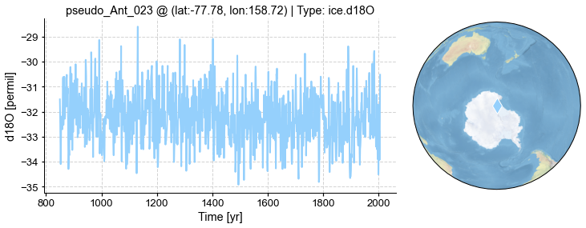

PSM for ice core d18O#
In this tutorial, we introduce the PSM for ice core d18O in cfr.
[1]:
%load_ext autoreload
%autoreload 2
import cfr
import pandas as pd
import numpy as np
import os
from tqdm import tqdm
import warnings
warnings.filterwarnings('ignore')
Data preparation#
Proxy#
[2]:
df = pd.read_pickle('./data/pages2k_dataset.pkl')
pdb = cfr.ProxyDatabase().from_df(df)
[3]:
pobj = pdb.records['Arc_011']
fig, ax = pobj.plot()

Model#
[4]:
%%time
dirpath = './data'
model_tas = cfr.ClimateField().load_nc(os.path.join(dirpath, 'tas_sfc_Amon_iCESM_past1000historical_085001-200512.nc'))
model_pr = cfr.ClimateField().load_nc(os.path.join(dirpath, 'pr_sfc_Amon_iCESM_past1000historical_085001-200512.nc'))
model_psl = cfr.ClimateField().load_nc(os.path.join(dirpath, 'psl_sfc_Amon_iCESM_past1000historical_085001-200512.nc'))
model_d18O = cfr.ClimateField().load_nc(os.path.join(dirpath, 'd18O_sfc_Amon_iCESM_past1000historical_085001-200512.nc'))
CPU times: user 2.07 s, sys: 18.6 ms, total: 2.09 s
Wall time: 2.03 s
Get climate data for a specific ProxyRecord#
[5]:
pdb_ice_d18O = pdb.filter(by='ptype', keys=['ice.d18O'])
fig, ax = pdb_ice_d18O.plot()

[6]:
%%time
ppdb = cfr.ProxyDatabase()
pps = []
for pid, pobj in tqdm(pdb_ice_d18O.records.items(), total=pdb_ice_d18O.nrec):
pobj.del_clim()
pobj.get_clim(model_tas, tag='model')
pobj.get_clim(model_pr, tag='model')
pobj.get_clim(model_psl, tag='model')
pobj.get_clim(model_d18O, tag='model')
mdl = cfr.psm.Ice_d18O(pobj)
pp = mdl.forward()
pps.append(pp)
ppdb += pps
pd.to_pickle(ppdb, './data/pseudoPAGES2k/pseudo.ice.d18O.pkl')
0%| | 0/39 [00:00<?, ?it/s]
Warning: convolution kernel length (zp) is approaching that of half the length of timeseries. Kernel being clipped.
3%|▎ | 1/39 [00:08<05:08, 8.11s/it]
Warning: convolution kernel length (zp) is approaching that of half the length of timeseries. Kernel being clipped.
8%|▊ | 3/39 [00:22<04:25, 7.37s/it]
Warning: convolution kernel length (zp) is approaching that of half the length of timeseries. Kernel being clipped.
10%|█ | 4/39 [00:29<04:12, 7.22s/it]
Warning: convolution kernel length (zp) is approaching that of half the length of timeseries. Kernel being clipped.
13%|█▎ | 5/39 [00:38<04:22, 7.72s/it]
Warning: convolution kernel length (zp) is approaching that of half the length of timeseries. Kernel being clipped.
18%|█▊ | 7/39 [00:53<04:11, 7.87s/it]
Warning: convolution kernel length (zp) is approaching that of half the length of timeseries. Kernel being clipped.
21%|██ | 8/39 [01:01<03:57, 7.67s/it]
Warning: convolution kernel length (zp) is approaching that of half the length of timeseries. Kernel being clipped.
26%|██▌ | 10/39 [01:21<04:10, 8.64s/it]
Warning: convolution kernel length (zp) is approaching that of half the length of timeseries. Kernel being clipped.
28%|██▊ | 11/39 [01:29<03:56, 8.44s/it]
Warning: convolution kernel length (zp) is approaching that of half the length of timeseries. Kernel being clipped.
31%|███ | 12/39 [01:37<03:47, 8.41s/it]
Warning: convolution kernel length (zp) is approaching that of half the length of timeseries. Kernel being clipped.
38%|███▊ | 15/39 [02:01<03:17, 8.23s/it]
Warning: convolution kernel length (zp) is approaching that of half the length of timeseries. Kernel being clipped.
41%|████ | 16/39 [02:07<02:56, 7.68s/it]
Warning: convolution kernel length (zp) is approaching that of half the length of timeseries. Kernel being clipped.
44%|████▎ | 17/39 [02:14<02:43, 7.45s/it]
Warning: convolution kernel length (zp) is approaching that of half the length of timeseries. Kernel being clipped.
49%|████▊ | 19/39 [02:28<02:23, 7.17s/it]
Warning: convolution kernel length (zp) is approaching that of half the length of timeseries. Kernel being clipped.
51%|█████▏ | 20/39 [02:35<02:15, 7.15s/it]
Warning: convolution kernel length (zp) is approaching that of half the length of timeseries. Kernel being clipped.
54%|█████▍ | 21/39 [02:42<02:05, 6.97s/it]
Warning: convolution kernel length (zp) is approaching that of half the length of timeseries. Kernel being clipped.
56%|█████▋ | 22/39 [02:48<01:56, 6.86s/it]
Warning: convolution kernel length (zp) is approaching that of half the length of timeseries. Kernel being clipped.
59%|█████▉ | 23/39 [02:55<01:50, 6.88s/it]
Warning: convolution kernel length (zp) is approaching that of half the length of timeseries. Kernel being clipped.
62%|██████▏ | 24/39 [03:02<01:44, 6.96s/it]
Warning: convolution kernel length (zp) is approaching that of half the length of timeseries. Kernel being clipped.
64%|██████▍ | 25/39 [03:09<01:37, 6.97s/it]
Warning: convolution kernel length (zp) is approaching that of half the length of timeseries. Kernel being clipped.
72%|███████▏ | 28/39 [03:34<01:23, 7.57s/it]
Warning: convolution kernel length (zp) is approaching that of half the length of timeseries. Kernel being clipped.
74%|███████▍ | 29/39 [03:41<01:15, 7.54s/it]
Warning: convolution kernel length (zp) is approaching that of half the length of timeseries. Kernel being clipped.
77%|███████▋ | 30/39 [03:49<01:08, 7.61s/it]
Warning: convolution kernel length (zp) is approaching that of half the length of timeseries. Kernel being clipped.
79%|███████▉ | 31/39 [03:56<01:00, 7.51s/it]
Warning: convolution kernel length (zp) is approaching that of half the length of timeseries. Kernel being clipped.
82%|████████▏ | 32/39 [04:06<00:56, 8.13s/it]
Warning: convolution kernel length (zp) is approaching that of half the length of timeseries. Kernel being clipped.
90%|████████▉ | 35/39 [04:29<00:31, 7.80s/it]
Warning: convolution kernel length (zp) is approaching that of half the length of timeseries. Kernel being clipped.
92%|█████████▏| 36/39 [04:37<00:22, 7.65s/it]
Warning: convolution kernel length (zp) is approaching that of half the length of timeseries. Kernel being clipped.
95%|█████████▍| 37/39 [04:45<00:15, 7.80s/it]
Warning: convolution kernel length (zp) is approaching that of half the length of timeseries. Kernel being clipped.
97%|█████████▋| 38/39 [04:52<00:07, 7.55s/it]
Warning: convolution kernel length (zp) is approaching that of half the length of timeseries. Kernel being clipped.
100%|██████████| 39/39 [05:00<00:00, 7.69s/it]
CPU times: user 1min 5s, sys: 23.1 s, total: 1min 28s
Wall time: 5min
[11]:
import pandas as pd
ppdb = pd.read_pickle('./data/pseudoPAGES2k/pseudo.ice.d18O.pkl')
fig, ax = ppdb.plot()

[10]:
fig, ax = ppdb.records['pseudo_Ant_023'].plot()

[ ]: